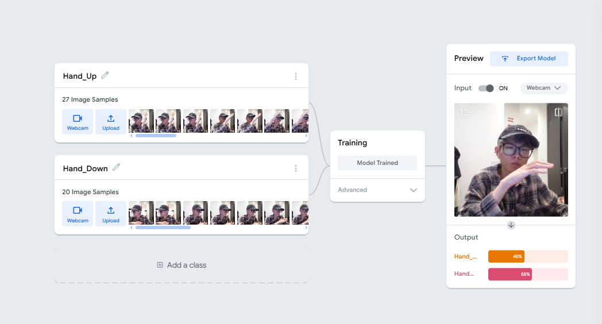
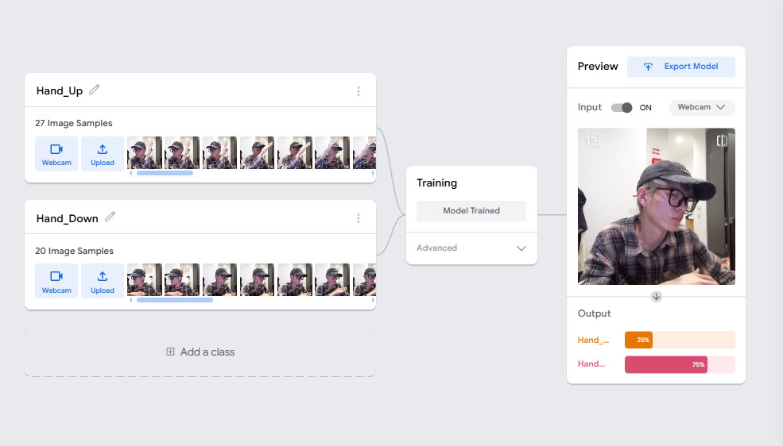
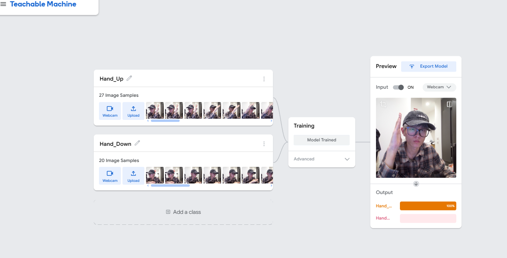

How Classification Systems Erase Edge Cases Through Forced Binary Logic
Example: "Superheroes Vampire Elsa" - Child IP + Horror elements
The YouTube metadata system captures titles, channels, and view counts, but fails to record critical signals: content risk cues ("Vampire", "Terror"), psychological harm indicators, and non-English semantic connotations. These missing signals demonstrate how platform infrastructure renders certain harms invisible from the outset.
Image Distortion | Abnormal Behavior
Horror Scenery | Plot Horror
Character Threat | Postural Intimidation
Victim-Attacker Composition | Death Scene
Childlike elements in harm context
Hover over taxonomy boxes to see complexity
The five-dimension taxonomy (Alienation, Horrorization, Threat, Murder Narrative, Child-Coded Presence) forces hybrid content into discrete categories. When an image contains both "IP Horrorization" and "Death Narrative Implication," the system must choose one, erasing multidimensional meaning. Emotional harm and implied value harm remain entirely uncaptured.

Same posture: 55% Hand Down

Same posture: 76% Hand Down

Clear case: 100% Hand Up
The binary taxonomy (Hand_Up/Hand_Down) forces a sharp boundary on continuous physical movement. At shoulder height, the model exhibits "label flipping"—confidence shifts from 55% to 76% for the same approximate posture. The human-obvious "half-raised" state is computationally illegible, demonstrating how classification design collapses continuous reality into forced discrete choices.
The threshold slider demonstrates governance power: budget constraints determine what becomes "visible" as data. Setting threshold at 55 vs 80 fundamentally changes which events count as real. This pre-algorithmic gate shapes the entire downstream pipeline—what the model can learn, what patterns emerge, what inequalities become computationally legible.
Baseline (Direct)
Simple instruction → Stereotyped output
Nuanced (Indirect)
Contextual framing → Diverse output
Computational inequality emerges when classification systems impose discrete categories on continuous phenomena. The solution requires redesigning taxonomies to accommodate uncertainty, hybridity, and context-dependency. This means: adding "boundary" categories, allowing multi-label classification, and building confidence calibration that reflects genuine epistemic uncertainty rather than false precision.